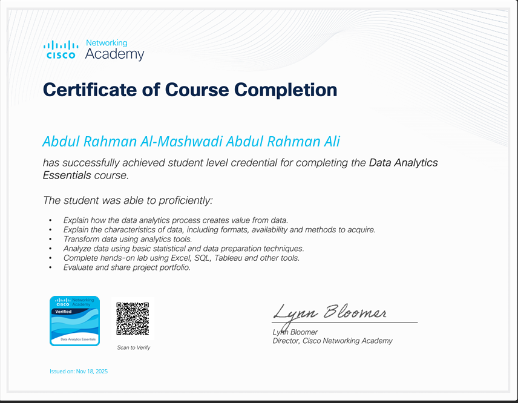
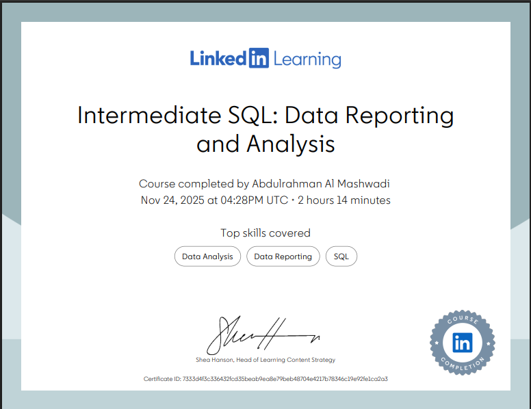

Unlocking Insights
through Data.
I'm Abdulrahman Almashwadi, a Data Analyst transforming raw data into business-driven narratives using Python, SQL, and BI tools.
Education
Academic foundation shaping analytical rigor.
Bachelor of Computer Science
Faculty of Computers and Information, Sohag University
GPA: VERY GOOD
Relevant Coursework: Data Mining, Database Systems, Statistics & Probability, Data Analytics
Pursuing a comprehensive Computer Science degree with a focus on data analysis and software development. Developing strong analytical and technical skills through coursework and practical projects.
Technical Expertise
Core competencies driving data transformation and insights.
Programming & Databases
Visualization & BI
Tools & Environments
Analytical Concepts
Soft Skills
Featured Projects
Data-driven solutions showcasing actionable insights.
Corona Data Analysis
Comprehensive analysis of COVID-19 trends, focusing on infection rates, mortality, and impact across different demographics.
Suicide Data Analysis
A deep dive into global suicide rates to identify socio-economic patterns and key driving factors over time.
Sales Data Analysis
Analyzed sales pipeline and customer behaviors to optimize conversion rates and track KPI progress.
Tableau BI Dashboard
Built highly interactive business dashboards allowing stakeholders to drill down into operational metrics.

COVID-19 Data Exploration
Detailed SQL exploration of the COVID-19 dataset, extracting critical global health insights.

Data Job Market Analysis V1.0
Python-driven analysis to uncover trends, salary distributions, and top skills in the Data Job Market.

Data Job Market Analysis V2.0
Advanced iteration of the job market analysis using Python for deeper predictive metrics.

SQL Job Postings Analysis
Leveraging SQL queries to filter, aggregate, and report on large-scale job posting databases.

Excel Job Market Insights
Utilized advanced Pivot Tables and Power Query in Excel for visual job market exploration.

Power BI Survey Dashboard
Interactive dashboard visualizing massive survey responses regarding data job satisfaction.

Job Market Dashboard V1.0
A Power BI dashboard tracking current open roles, demand, and salary ranges across tech sectors.

Job Market Dashboard V2.0
Enhanced iteration featuring predictive trend lines and customized DAX measures.
Certificates & Achievements
Professional milestones organized in a structured archive.

Forward Program
McKinsey & CompanyDeveloped leadership, problem-solving, and professional adaptability skills.

SQL Data Reporting
DataCampMastered data extraction, joining tables, and complex querying for business reporting.

Data for Student
Online PlatformFoundational data literacy, data cleaning, and dataset handling principles.

Data Analyst
linkedin PlatformMastered end-to-end data pipelines, statistical insights, and advanced Python methodologies.

Analytics Essentials
CiscoLearned core network telemetry, data security, and visualization practices.
Microsoft Cert
MicrosoftValidated expertise in MS environments, data manipulation, and enterprise toolsets.
Power BI Mastery
Online PlatformDeveloped highly interactive dashboards, DAX queries, and robust data models.

Advanced SQL
Online PlatformLearned advanced SQL querying, joins, and real-world data analysis techniques.
Tableau Pro
Online PlatformExplored advanced data blending, LOD expressions, and visual data storytelling.
Professional Development
Successfully completed specialized courses and applied the acquired knowledge through practical projects and real-world implementations.

SQL for Data Analytics
Essential SQL skills for data extraction, manipulation, and analysis.
Watch Course
Python for Data Analytics
Learn Python programming tailored for data manipulation.
Watch Course

Excel for Data Analytics
Advanced Excel techniques, pivot tables, and power query.
Watch Course
Tableau Ultimate Full Course
From Zero to HERO. Master Tableau for Data Science step-by-step.
Watch Course
Statistics – Full Lecture
Foundational statistics required for quantitative analysis in data science.
Watch Course
Statistical Analysis (Playlist)
Core methods for hypothesis testing and interpreting data distributions.
Watch Course
Probability and Statistics
In-depth coverage of probability distributions and theorems.
Watch Channel